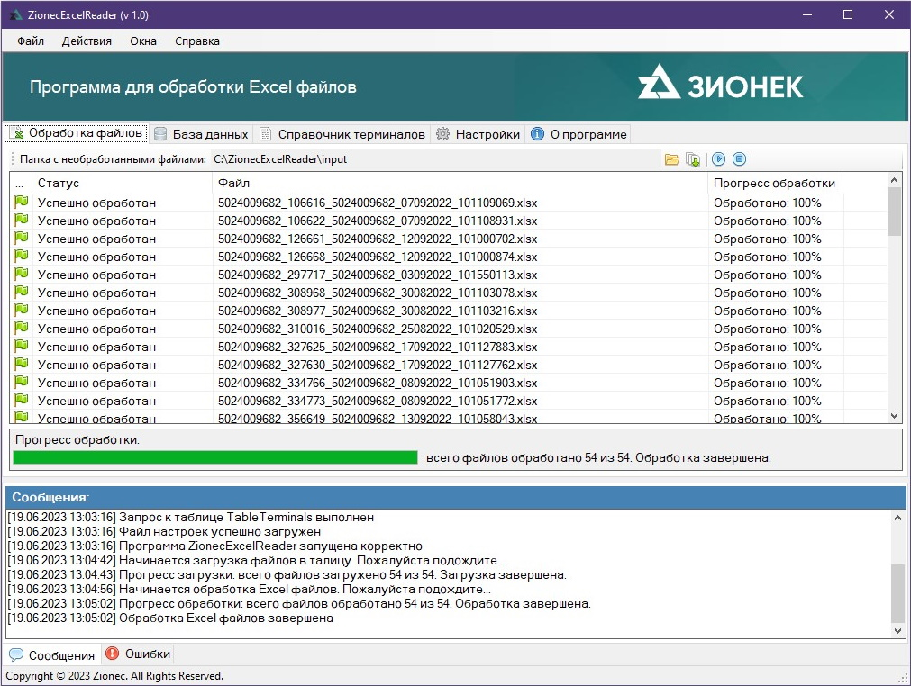
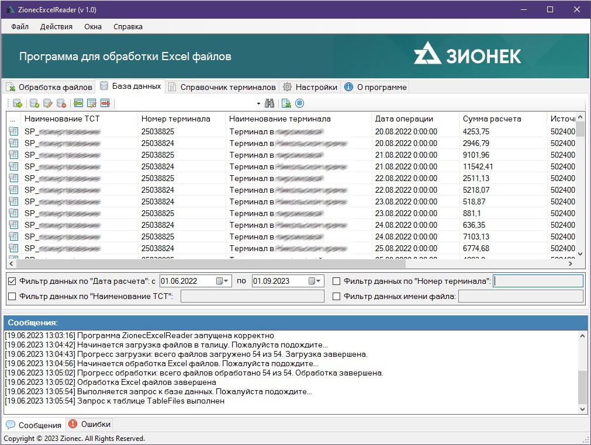
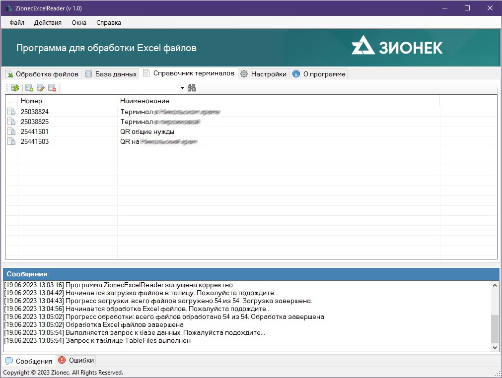
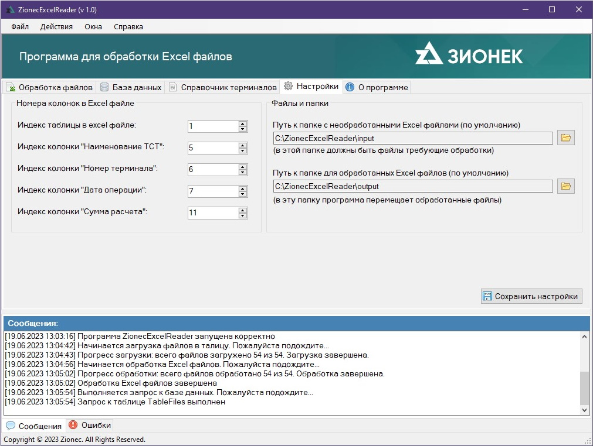
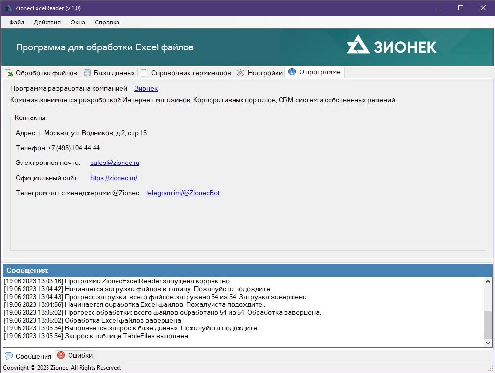
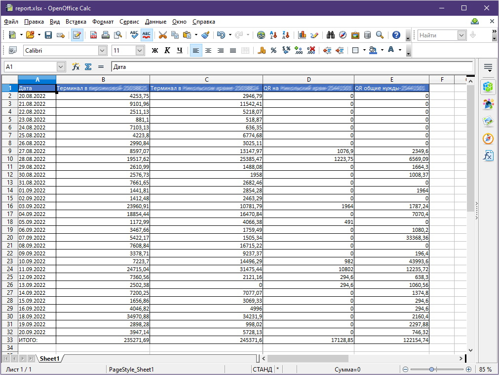

Общая информация:
ФИО: Сомов Евгений Павлович
Образование: Высшее
Специальность: Компьютерная инженерия
Место работы: Freelance
Должность: Automation/Manual QA Engineer.
Образование: Высшее
Специальность: Компьютерная инженерия
Место работы: Freelance
Должность: Automation/Manual QA Engineer.
Специализация:
- Автоматизированное тестирование (Automation Testing)
- Ручное тестирование (Manual Testing)
- Контроль качества (Quality Control)
- Нагрузочное тестирование (Load Testing)
- Тестирование баз данных (Database Testing)
- Разработка desktop ПО под Windows (C# Developer)
ZionecExcelReader
Программа ZionecExcelReader предназначена для обработки Excel файлов
с последующим получением данные из файлов и их сохранением в локальную базу данных.
На основании данных из базы данных строится новый отчет и сохраняется в Excel файл.
Загрузка файлов в таблицу с последующей обработкой и выгрузкой данных в локальную базу данных.

Выборка данных из локальной базы данных на основании включенных фильтров.

Справочник терминалов позволяет хранить в локальной базе данных номер и наименование терминала.

Гибкие настройки позволяют указать индекс колонок в excel таблицах из которых берется информация, а так же пути к папкам в которых хранятся excel файлы.

Общая информация о прогремме.

Результат работы программы отражен в сформированном excel отчете.
